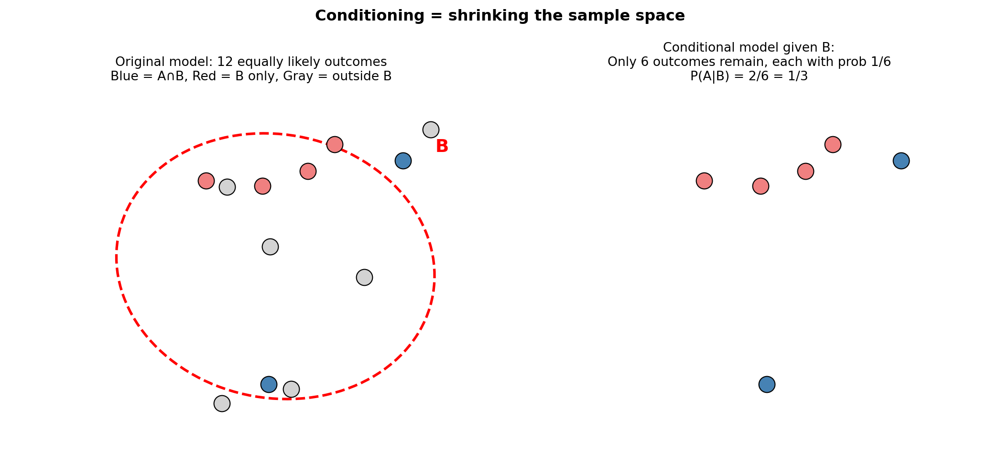
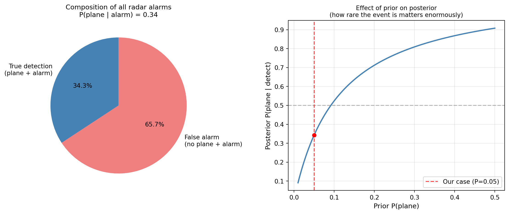
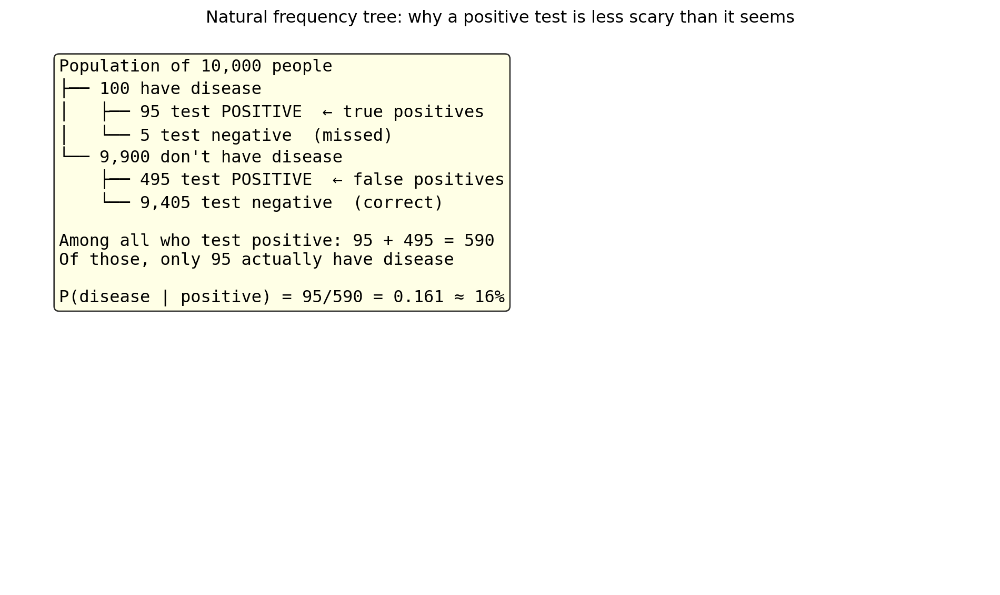

A rapid test for a disease is described as 95% accurate. You take the test. It comes back positive. How worried should you be?
Most people say: 95% chance I have it. The correct answer — which we will derive — might be closer to 9%. The difference is dramatic, and it comes entirely from ignoring one piece of information: how common is the disease in the first place?
This is the central insight of conditional probability. Probabilities are not static — they must be revised when new information arrives. The three tools that make this precise are:
The Multiplication Rule — probability of a sequence of events
The Total Probability Theorem — breaking a complex event into simpler scenarios
Bayes’ Rule — working backwards from observed evidence to hidden causes
These three tools, combined, are the foundation of inference — the entire field of reasoning from data to conclusions.
4.2 1. Revised Beliefs
4.2.1 The Intuition
Imagine a town registry of 1000 residents. You pick one at random.
Before any information: P(\text{person is under 18}) \approx 0.25.
New information: the person is married.
After the information: P(\text{person is under 18} \mid \text{married}) is now much smaller — perhaps 0.01.
The new information did not change the world. It changed what we know about it, which forces a revision of our probability. Conditional probability is the formal machinery for this revision.
4.2.2 Shrinking the Sample Space
When we learn that event B has occurred, two things happen:
Elimination: every outcome not in B becomes impossible.
Re-normalisation: the remaining outcomes in B must now sum to probability 1, so their relative weights are preserved but scaled up.
import matplotlib.pyplot as pltimport matplotlib.patches as mpatchesimport numpy as npfig, axes = plt.subplots(1, 2, figsize=(11, 5))# Left: original sample space with 12 equally likely outcomesax = axes[0]np.random.seed(0)xs = np.random.uniform(0.1, 0.9, 12)ys = np.random.uniform(0.1, 0.9, 12)# Mark 6 as "in B" and 2 of those as "in A ∩ B"in_B = [False]*12in_AB = [False]*12for i in [1, 3, 5, 7, 9, 11]: in_B[i] =Truefor i in [3, 7]: in_AB[i] =Truefor i, (x, y) inenumerate(zip(xs, ys)): color ='steelblue'if in_AB[i] else ('lightcoral'if in_B[i] else'lightgray') ax.scatter(x, y, c=color, s=160, zorder=3, edgecolors='black', linewidths=0.8)ellipse_B = mpatches.Ellipse((0.55, 0.5), 0.65, 0.75, angle=15, fill=False, edgecolor='red', linewidth=2, linestyle='--')ax.add_patch(ellipse_B)ax.text(0.88, 0.82, 'B', fontsize=14, color='red', fontweight='bold')ax.set_xlim(0, 1); ax.set_ylim(0, 1)ax.set_title('Original model: 12 equally likely outcomes\nBlue = A∩B, Red = B only, Gray = outside B', fontsize=10)ax.axis('off')# Right: conditional model — only B remainsax2 = axes[1]xs_B = [xs[i] for i inrange(12) if in_B[i]]ys_B = [ys[i] for i inrange(12) if in_B[i]]in_AB_B = [in_AB[i] for i inrange(12) if in_B[i]]for x, y, ab inzip(xs_B, ys_B, in_AB_B): color ='steelblue'if ab else'lightcoral' ax2.scatter(x, y, c=color, s=160, zorder=3, edgecolors='black', linewidths=0.8)ax2.set_xlim(0, 1); ax2.set_ylim(0, 1)ax2.set_title('Conditional model given B:\nOnly 6 outcomes remain, each with prob 1/6\nP(A|B) = 2/6 = 1/3', fontsize=10)ax2.axis('off')plt.suptitle('Conditioning = shrinking the sample space', fontsize=12, fontweight='bold')plt.tight_layout()plt.show()

4.3 2. The Definition
ImportantConditional Probability
The conditional probability of event A given that event B has occurred is:
P(A \mid B) = \frac{P(A \cap B)}{P(B)}
Requirements: P(B) > 0. (We cannot condition on something that cannot happen.)
This is a definition, not a theorem. We choose this formula because it captures the intuition of restricting attention to the outcomes inside B and rescaling.
Sanity checks:
P(B \mid B) = \frac{P(B \cap B)}{P(B)} = 1 — if we know B occurred, it is certain. ✓
P(\emptyset \mid B) = \frac{P(\emptyset)}{P(B)} = 0 — the impossible event stays impossible. ✓
P(\Omega \mid B) = \frac{P(B)}{P(B)} = 1 — something must happen. ✓
The conditional probability law P(\cdot \mid B) is itself a valid probability law — it satisfies all three Kolmogorov axioms. This means every theorem we proved from the axioms (complement rule, inclusion-exclusion, union bound, etc.) holds for conditional probabilities too.
4.4 3. A Worked Example: The 4-Sided Die
Roll a 4-sided die twice. Sample space: 16 equally likely outcomes.
Event B: the minimum of the two rolls is exactly 2. B = \{(2,2),(2,3),(2,4),(3,2),(4,2)\}, \quad P(B) = \frac{5}{16}
omega = {(i, j) for i inrange(1, 5) for j inrange(1, 5)}n =len(omega)B = {(i, j) for i, j in omega ifmin(i, j) ==2}print(f"B = {sorted(B)}")print(f"P(B) = {len(B)}/{n} = {len(B)/n:.4f}")
# Method 1: formal formulaA = {(i, j) for i, j in omega ifmax(i, j) ==3}A_and_B = A & Bprint(f"A ∩ B (max=3 AND min=2) = {sorted(A_and_B)}")print(f"P(A ∩ B) = {len(A_and_B)}/{n}")print(f"P(max=3 | min=2) = {len(A_and_B)/n:.4f} / {len(B)/n:.4f} = {len(A_and_B)/len(B):.4f}")# Method 2: directly count within Boutcomes_in_B_with_max3 = [(i,j) for i,j in B ifmax(i,j) ==3]print(f"\nMethod 2 (count within B): {outcomes_in_B_with_max3}")print(f"P(max=3 | min=2) = {len(outcomes_in_B_with_max3)}/{len(B)} = {len(outcomes_in_B_with_max3)/len(B):.4f}")
A ∩ B (max=3 AND min=2) = [(2, 3), (3, 2)]
P(A ∩ B) = 2/16
P(max=3 | min=2) = 0.1250 / 0.3125 = 0.4000
Method 2 (count within B): [(2, 3), (3, 2)]
P(max=3 | min=2) = 2/5 = 0.4000
Both methods give \frac{2}{5}. Method 2 makes the intuition concrete: once we know B occurred, we live in a new universe of 5 outcomes, and 2 of them have maximum = 3.
4.5 4. The Multiplication Rule
Rearranging the definition of conditional probability gives:
P(A \cap B) = P(B) \cdot P(A \mid B) = P(A) \cdot P(B \mid A)
This is the Multiplication Rule for two events. It extends to any number of events:
Tree diagram interpretation: each factor is the probability of one branch, given all previous branches were taken. To get the probability of a leaf (a complete outcome), multiply along the path.
4.5.1 Example: Drawing Cards Without Replacement
A standard deck has 52 cards. Draw 3 cards without replacement. What is the probability all three are aces?
P(plane AND detect) = 0.0495
P(no plane AND detect) = 0.0950
4.7 6. Total Probability Theorem
The radar example shows a general pattern. If A_1, A_2, \ldots, A_npartition\Omega (disjoint, exhaustive, each with P(A_i) > 0), then any event B can be broken into pieces:
P(A_i) — prior: belief about scenario A_i before observing B
P(B \mid A_i) — likelihood: how probable is B under scenario A_i
P(A_i \mid B) — posterior: revised belief after observing B
Bayes’ Rule is not a new theorem — it is just the definition of conditional probability, with the numerator expanded by the Multiplication Rule and the denominator by the Total Probability Theorem.
The paradox of low priors: even though the radar is 99% accurate at detecting real planes and has only a 10% false alarm rate, when it goes off there is only a 34% chance a plane is actually there.
Why? Because planes are rare (P = 5\%). The large pool of “no plane” situations generates many false alarms even at 10% — far outnumbering the true detections.
import matplotlib.pyplot as pltfig, axes = plt.subplots(1, 2, figsize=(12, 5))# Left: visualise the populationslabels_pie = ['True detection\n(plane + alarm)', 'False alarm\n(no plane + alarm)']sizes = [P_A_and_D, P_Ac_and_D]colors = ['steelblue', 'lightcoral']axes[0].pie(sizes, labels=labels_pie, colors=colors, autopct='%1.1f%%', startangle=90, textprops={'fontsize': 10})axes[0].set_title(f'Composition of all radar alarms\n'f'P(plane | alarm) = {P_A_given_D:.2f}', fontsize=11)# Right: posterior vs prior for different prior valuespriors = np.linspace(0.01, 0.5, 200)posteriors = (priors * P_D_given_A) / (priors * P_D_given_A + (1- priors) * P_D_given_Ac)axes[1].plot(priors, posteriors, color='steelblue', lw=2)axes[1].axhline(0.5, color='gray', linestyle='--', alpha=0.5)axes[1].axvline(0.05, color='red', linestyle='--', alpha=0.7, label='Our case (P=0.05)')axes[1].scatter([0.05], [P_A_given_D], color='red', zorder=5)axes[1].set_xlabel('Prior P(plane)', fontsize=11)axes[1].set_ylabel('Posterior P(plane | detect)', fontsize=11)axes[1].set_title('Effect of prior on posterior\n(how rare the event is matters enormously)', fontsize=10)axes[1].legend()axes[1].grid(True, alpha=0.3)plt.tight_layout()plt.show()

4.9 8. Back to the Medical Test
Now we can answer the opening question properly.
A disease affects 1% of the population. A test is 95% accurate:
import matplotlib.pyplot as plt# Visualise with a frequency tree (natural frequencies approach)fig, ax = plt.subplots(figsize=(10, 6))ax.axis('off')population =10000has_disease =int(population * P_disease) # 100no_disease = population - has_disease # 9900true_pos =int(has_disease * P_pos_given_D) # 95false_neg = has_disease - true_pos # 5false_pos =int(no_disease * P_pos_given_H) # 495true_neg = no_disease - false_pos # 9405text = (f"Population of {population:,} people\n"f"├── {has_disease} have disease\n"f"│ ├── {true_pos} test POSITIVE ← true positives\n"f"│ └── {false_neg} test negative (missed)\n"f"└── {no_disease:,} don't have disease\n"f" ├── {false_pos} test POSITIVE ← false positives\n"f" └── {true_neg:,} test negative (correct)\n\n"f"Among all who test positive: {true_pos} + {false_pos} = {true_pos + false_pos}\n"f"Of those, only {true_pos} actually have disease\n\n"f"P(disease | positive) = {true_pos}/{true_pos + false_pos} = {true_pos/(true_pos+false_pos):.3f} ≈ {P_D_given_pos*100:.0f}%")ax.text(0.05, 0.95, text, transform=ax.transAxes, fontsize=12, verticalalignment='top', fontfamily='monospace', bbox=dict(boxstyle='round', facecolor='lightyellow', alpha=0.8))ax.set_title('Natural frequency tree: why a positive test is less scary than it seems', fontsize=12)plt.tight_layout()plt.show()

Out of 10,000 people who take the test, 590 test positive — but only 95 of them actually have the disease. That is 16%, not 95%.
The result is so counterintuitive because the false positives (495) swamp the true positives (95). The disease is rare, so the large healthy population produces many false alarms even at a 5% false positive rate.
4.10 9. Conditional Probability Satisfies the Axioms
A key fact: for any fixed event B with P(B) > 0, the function Q(A) = P(A \mid B) is itself a valid probability law. It satisfies:
Non-negativity: P(A \mid B) = \frac{P(A \cap B)}{P(B)} \ge 0 since both numerator and denominator are non-negative. ✓
Additivity: if A_1 \cap A_2 = \emptyset, then (A_1 \cap B) \cap (A_2 \cap B) = \emptyset, so P(A_1 \cup A_2 \mid B) = P(A_1 \mid B) + P(A_2 \mid B). ✓
This means every theorem derived from the axioms — complement rule, monotonicity, inclusion-exclusion, union bound — holds for conditional probabilities too, simply by replacing P(\cdot) with P(\cdot \mid B) everywhere.
4.11 10. Exercises
1. Conditional probability from a table. A company has 200 employees:
Promoted
Not promoted
Male
40
80
Female
30
50
A randomly chosen employee is selected.
What is P(\text{promoted})?
What is P(\text{promoted} \mid \text{female})?
What is P(\text{female} \mid \text{promoted})?
Is promotion independent of gender? (Hint: check whether P(\text{promoted} \mid \text{female}) = P(\text{promoted}).)
2. Multiplication rule. A bag has 5 red balls and 3 blue balls. Draw 3 balls without replacement.
Use the multiplication rule to find P(\text{all three red}).
Use the multiplication rule to find P(\text{first red, second blue, third red}).
Verify (a) by direct counting: how many ways to choose 3 red balls from 5, divided by total ways to choose 3 balls from 8?
3. Total probability theorem. A factory has two machines. Machine A produces 60% of output and has a 3% defect rate. Machine B produces 40% and has a 5% defect rate.
Use the Total Probability Theorem to find P(\text{defective}).
Write a simulation to verify your answer.
4. Bayes’ Rule. Using the factory setup from Exercise 3, a randomly chosen item is found to be defective.
What is P(\text{made by Machine A} \mid \text{defective})?
What is P(\text{made by Machine B} \mid \text{defective})?
Interpret: even though Machine B has a higher defect rate, why might the answer to (a) be large?
5. Medical testing — varying the prior. Using the medical test example (95% sensitivity, 5% false positive rate):
Compute P(\text{disease} \mid \text{positive}) for disease prevalences of 1%, 5%, 10%, and 50%.
Plot the posterior probability as a function of prior prevalence.
At what prevalence does a positive test result in a 50% posterior probability of disease?
6. Sequential Bayes. You take the medical test twice (independently). Both come back positive.
Treat the first test result as establishing a new prior. Apply Bayes’ Rule a second time to find P(\text{disease} \mid \text{two positives}).
Write a simulation to verify.
Compare with the result from a single positive test.